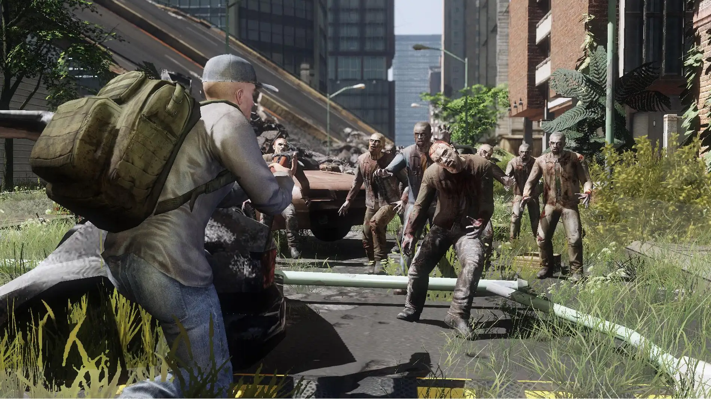

Introducción
DayZ es un juego de supervivencia en un mundo abierto postapocalíptico plagado de zombis y otros jugadores que pueden ser tanto aliados como enemigos. Tu objetivo principal es sobrevivir el mayor tiempo posible, enfrentándote a desafíos como el hambre, la sed, las enfermedades y, por supuesto, los peligros constantes del entorno. Esta guía te proporcionará consejos esenciales para comenzar tu aventura y mejorar tus posibilidades de supervivencia.
A medida que adquieras experiencia, intenta explorar áreas más peligrosas y buscar equipo avanzado. Aprende a cazar y pescar para obtener alimentos frescos, y mejora tus habilidades de construcción para crear refugios más seguros.
DayZ es un juego desafiante pero gratificante que pone a prueba tus habilidades de supervivencia y estrategia. Utiliza esta guía como punto de partida para aprender los conceptos básicos y mejorar tus técnicas a medida que explores el vasto y peligroso mundo del juego. ¡Buena suerte, superviviente!